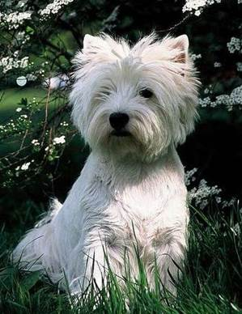
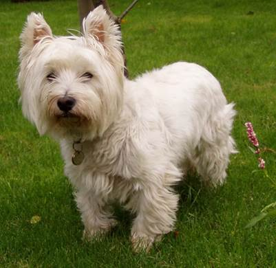

❖ 特殊注明：Digression的I~III和后面Side Story的I~IV符号是我为了标注方便而额外加的，实际游戏中并没有。
1. 出典：
㹴犬，是一类最初为打猎和消除毒蛇害虫而培育的犬种。它们虽然一般个子较小，却很勇猛，坚强；具有精力充沛，活跃，近乎过度活跃的个性。今天，大多㹴犬都是做宠物狗，是极佳的家庭伴侣犬种。它们普遍对主人忠诚，亲善；但它们的强烈个性需要严格管教。

Figure 1. 接近游戏CG的西高地白㹴
2. 剧情简介：
继续第三章的采访：
 路人A：雨森是一个深居简出的大小姐，平时只带着她喜欢的宠物狗出去散步。当这只宠物狗去世时，雨森罕见的大哭大闹，并像变了个人意昂。
路人A：雨森是一个深居简出的大小姐，平时只带着她喜欢的宠物狗出去散步。当这只宠物狗去世时，雨森罕见的大哭大闹，并像变了个人意昂。
 路人B：雨森一家是基督徒。雨森喜爱儿童文学的书，这些中的绝大部分是英国儿童文学。
路人B：雨森一家是基督徒。雨森喜爱儿童文学的书，这些中的绝大部分是英国儿童文学。
 Standstill里有提到灰流的父亲是一个国际宗教组织的日本分部担任要职，而雨森的父母是基督徒，所以可能基于这层关系才让灰流认识了还是家里蹲的雨森。
Standstill里有提到灰流的父亲是一个国际宗教组织的日本分部担任要职，而雨森的父母是基督徒，所以可能基于这层关系才让灰流认识了还是家里蹲的雨森。